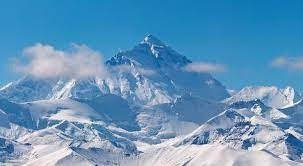
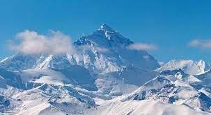
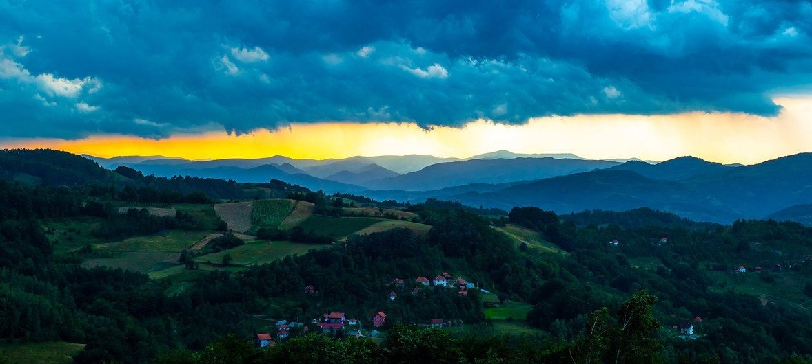
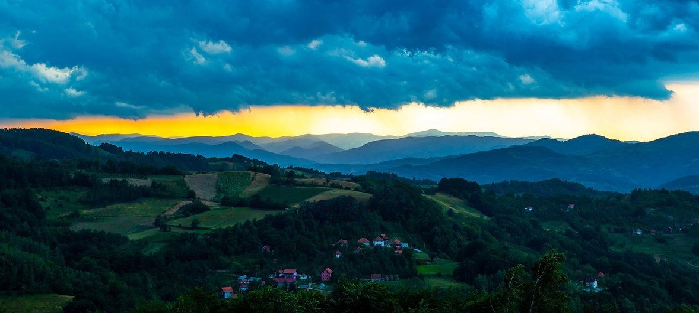
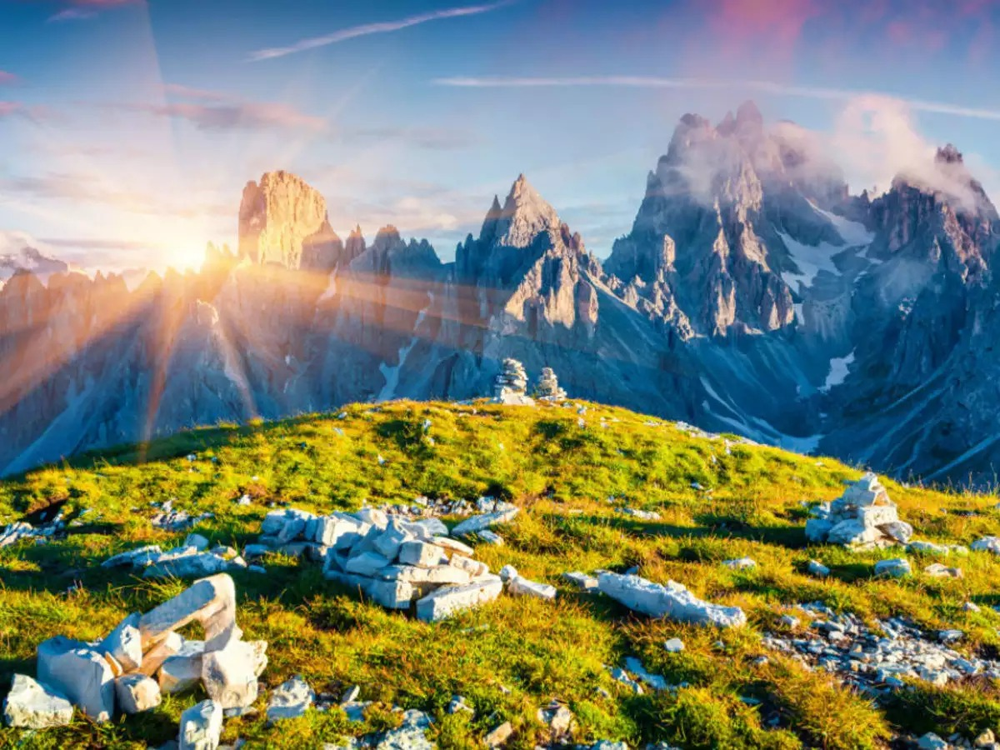
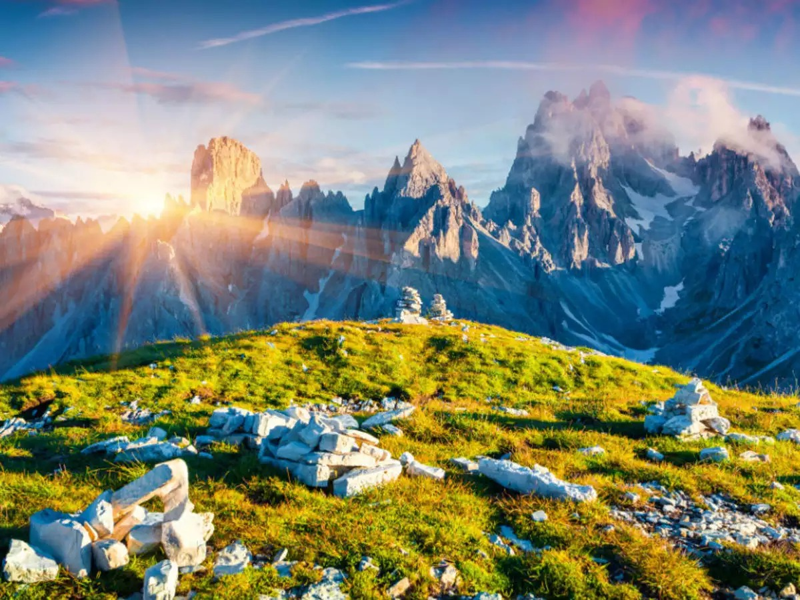
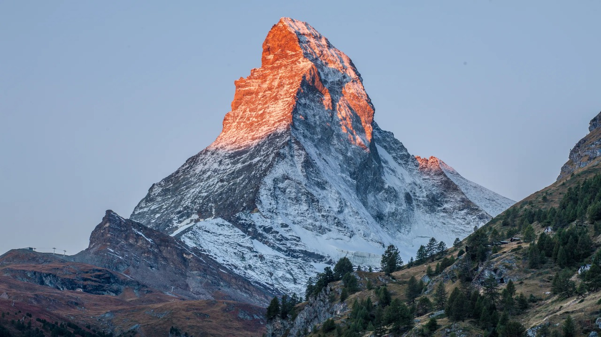
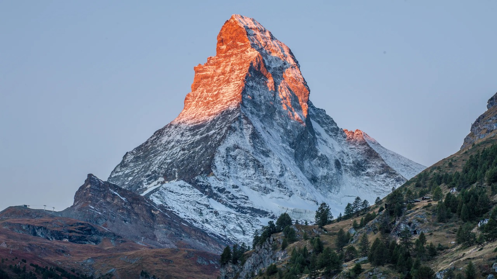

Mountain
Aura and Vibes are unbeatable

River side
A place where ypur soul rests and finds peace

Lake side
Let's have a vaca together
Nature's Vibes
Aura and Vibes are unbeatable
A place where ypur soul rests and finds peace
Let's have a vaca together
 

 

 


 
